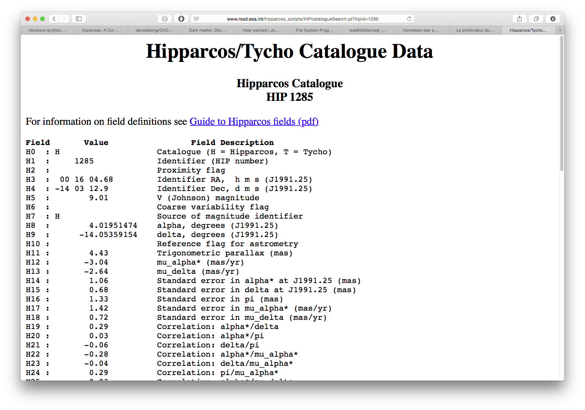
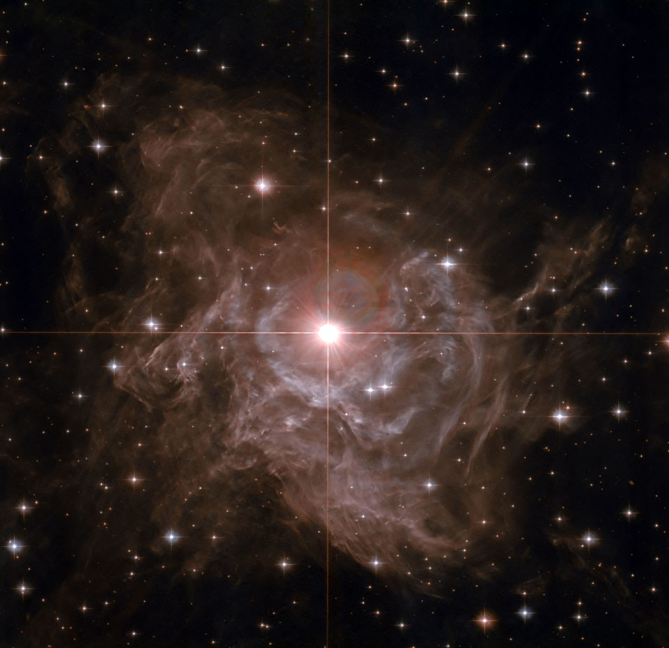
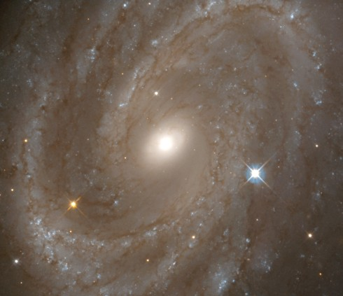

Distances au-delà du système solaire
CEA Explorer et comprendre l’Univers
23 avril 2020
Comment fait-on pour déterminer la taille des astres et les distances entre la Terre et les astres?
Rappel
Dans le système solaire, on peut utiliser les méthodes suivantes pour déterminer des distances :
- Radar
- Méthode par parallaxe
Distance aux étoiles proches
- Méthode de la parallaxe annuelle
- On mesure le changement de position apparente d’une étoile à 6 mois d’intervalle
Parallaxe annuelle

Parallaxe annuelle
- Plus une étoile est loin, moins l’effet de parallaxe est important
- On peut calculer la distance minimale à laquelle une étoile doit être pour qu’on ne puisse pas déterminer sa distance par parallaxe
- Avec des instruments sur Terre : quelques dizaines d’années-lumière
Parallaxe annuelle
- Friedrich Bessel (1838)
- 61 du Cygne : 1/10 000°
- 11,2 al
Hipparcos

Hipparcos
- Lancé par l’agence spatiale européenne en 1989
- Mesure la parallaxe d’étoiles jusqu’à 100 al
- Catalogue disponible sur Internet
Hipparcos

Méthodes basées sur l’intensité
- Intensité lumineuse : énergie par unité de surface
- Dépend de la luminosité de la source et de sa distance
\[I = \frac{L}{4\pi d^2}\]
Méthodes basées sur l’intensité
On observe une ampoule de 100 W. Un capteur permet de déterminer que l’intensité de la lumière qui provient de l’ampoule est de 0,08 W/m. À quelle distance est l’ampoule?
Méthodes basées sur l’intensité
Comment connaît-on la luminosité d’une étoile?
Méthode des étoiles jumelles
- Étoiles ont des caractéristiques mesurables
- Couleur
- Taille
- Type spectral
Méthode des étoiles jumelles
- On connaît la luminosité d’une étoile qui ressemble à celle pour laquelle on veut mesurer la distance
- On suppose que l’étoile d’intérêt a la même luminosité
- Calcul de la distance
Méthode des étoiles jumelles
- Méthode imprécise
- Polaris : 700 al
- Hipparcos : 430 al
Analyse des céphéides
- Céphéides : étoiles géantes rouges pulsantes
- Période des pulsations : 1 à 100 jours
Analyse des céphéides

NASA/JPL-Caltech/Carnegie
Analyse des céphéides
- Lien entre la période de pulsation et la luminosité
- Permet de mesurer des distances jusqu’à 108 Mal

Cephéide RS Pup | Hubble Legacy Archive, NASA, ESA - Processing: Stephen Byrne
Céphéides

NGC 4603 | Jeffrey Newman (UC Berkeley), NASA
Encore plus haut, encore plus loin!
- Galaxies spirales de type ScI : 2,5 milliards de fois plus lumineuses que le Soleil
- Supernovæ de type Ia : 10 milliards de fois plus lumineuses que le Soleil
- Jusqu’à des Gal

SN 1994D in NGC 4526 | HST | NASA/ESA